library(devtools)
devtools::install_github("vanleeuwen-hans/concertData")
library(concertData)Basic Statistics U2 Concerts
In this section we look at some basic statistics of the U2 shows and compare this with the statistics listed at https://www.u2gigs.com.
Load custom concertData package
First we load my custom concertData package where I organized all the functions to analyze the U2 concert data. This R package is available on my GitHub page at: https://github.com/vanleeuwen-hans/concertData.
# read the following file where the Rosemont duplication was not fixed yet
# this is explained further down on this report
u2data <- read_concertData_csv('u2data/archive/u2data_all_shows_clean_final_rosemontdup.csv')Longest set lists
List the shows with the longest set lists, i.e. where U2 played most songs in a concert. The list corresponds to the statistics at https://www.u2gigs.com/tourdb-stats.html.
# longest set lists
longest_setlists <- find_longest_setlists(u2data)
print(longest_setlists) date city country venue Number of songs played
1 2015-12-06 Paris France AccorHotels Arena 27
2 2018-05-02 Tulsa USA BOK Center 27
3 2015-10-18 Cologne Germany Lanxess Arena 27The info at https://www.u2gigs.com/tourdb-stats.html:
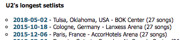
One of these shows, with 27 songs played, was in Cologne on October 18th, 2015. I was there with my wife, and before the show we had the chance to meet and greet with Adam Clayton, U2’s bass player. He signed my copy of the 1991 Achtung Baby album. I have included some pictures of that moment below.
Shows with most snippets
A snippet is a short piece of song (either from another artist or from U2 themselves) played as part of a regular song in the show.
# Get shows with most snippets
snippet_summary <- find_shows_with_most_snippets(u2data)
head(snippet_summary, n=10) # Show top 10 shows# A tibble: 10 × 5
date city country venue number_snippets_played
<date> <chr> <chr> <chr> <int>
1 2015-11-28 Dublin Ireland 3Arena 24
2 2015-11-19 Belfast Northern Ireland The SSE Arena 23
3 2015-10-30 London England The O2 23
4 2015-11-24 Dublin Ireland 3Arena 20
5 2015-11-23 Dublin Ireland 3Arena 20
6 2015-11-03 London England The O2 20
7 2015-05-19 San Jose USA SAP Center at Sa… 20
8 2015-12-06 Paris France AccorHotels Arena 19
9 2015-11-27 Dublin Ireland 3Arena 19
10 1997-07-31 Mannheim Germany Maimarkt 19The info at https://www.u2gigs.com/tourdb-stats.html:
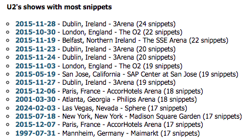
I noticed a discrepancy in number of snippets for some of these shows when comparing with the statistics at https://www.u2gigs.com/tourdb-stats.html, for example the London show on November 3rd, 2015, where my data calculates the number of snippets played as 20, while the info at https://www.u2gigs.com/show1957.html states 19. I first checked in my data which song was incorrectly identified as snippet. That turned out to be ‘Even Better Than The Real Thing’.
# check london show 2015-11-03
london_show <- subset(u2data, date == '2015-11-03' & snippet == TRUE, select = c("showID", "date","song_title", "snippet"))
print(london_show, n = max())# A tibble: 20 × 4
showID date song_title snippet
<dbl> <date> <chr> <lgl>
1 1957 2015-11-03 Van Morrison's Gloria TRUE
2 1957 2015-11-03 Do You Remember Rock 'n' Roll Radio? TRUE
3 1957 2015-11-03 Hold Me Close TRUE
4 1957 2015-11-03 When Johnny Comes Marching Home TRUE
5 1957 2015-11-03 Psalm 23 TRUE
6 1957 2015-11-03 Love and Peace or Else TRUE
7 1957 2015-11-03 Words TRUE
8 1957 2015-11-03 A Clockwork Orange TRUE
9 1957 2015-11-03 Even Better Than The Real Thing TRUE
10 1957 2015-11-03 Burning Down The House TRUE
11 1957 2015-11-03 Young Americans TRUE
12 1957 2015-11-03 1969 TRUE
13 1957 2015-11-03 Love Me Do TRUE
14 1957 2015-11-03 Ode To Joy TRUE
15 1957 2015-11-03 19 TRUE
16 1957 2015-11-03 California (There Is No End To Love) TRUE
17 1957 2015-11-03 Yellow TRUE
18 1957 2015-11-03 Live Forever TRUE
19 1957 2015-11-03 Mother And Child Reunion TRUE
20 1957 2015-11-03 40 TRUE The issue seems to be in the different HTML coding for one snippet on that page: 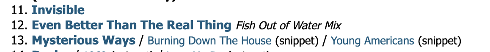
If we check the HTML code for the ‘Fish Out of Water Mix’ we see that it has a ‘snippet’ tag:
<li><a href="/Even_Better_Than_The_Real_Thing-s38.html">Even Better Than The Real Thing</a> <em class="snippet">Fish Out of Water Mix</em></li>Now compare this to what the HTML looks like normally for snippets at u2gigs.com:
<li><a href="/Mysterious_Ways-s26.html">Mysterious Ways</a> / <a class="snippet" href="/Burning_Down_The_House-s878.html">Burning Down The House</a> <span class="snippet">(snippet)</span> / <a class="snippet" href="/Young_Americans-s30.html">Young Americans</a> <span class="snippet">(snippet)</span></li>I’m not sure what u2gigs.com intended to do here, and whether this is a snippet or not. It does explain the different numbers seen earlier as my scraping code has counted songs preceding songs with those tags as snippet incorrectly.
Cities with most shows
We used this metric for data curation already, but here is the top 11 (instead of Top 10 so that Amsterdam is displayed 😀 ) of cities where U2 played most often. This matches exactly the statistics listed at https://www.u2gigs.com/tourdb-stats.html.
# cities with most shows played
top_cities <- find_most_played_cities(u2data, n = 13)
print(top_cities) city number_of_shows
1 Dublin 202
2 New York 146
3 London 126
4 Las Vegas 54
5 Los Angeles 53
6 Chicago 41
7 Boston 35
8 Toronto 30
9 Paris 29
10 East Rutherford 27
11 Sydney 27
12 Washington 27
13 Amsterdam 23The info at https://www.u2gigs.com/tourdb-stats.html:
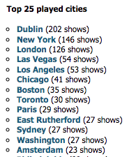
Venues with most shows
Here is the top 10 of venues where U2 played most often. This matches exactly the statistics listed at https://www.u2gigs.com/tourdb-stats.html.
# Get top 10 venues with most shows played
top_venues <- find_most_played_venues(u2data, n = 10)
print(top_venues) venue city number_of_shows
1 Sphere Las Vegas 40
2 Madison Square Garden New York 30
3 McGonagle's Dublin 28
4 United Center Chicago 19
5 Entertainment Centre Sydney 14
6 Croke Park Dublin 13
7 Sports Arena Los Angeles 13
8 Staples Center Los Angeles 13
9 Beacon Theatre New York 13
10 Arcadia Ballroom Cork 11The info at https://www.u2gigs.com/tourdb-stats.html:
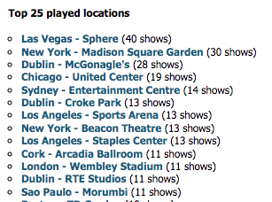
Countries with most shows
The top 10 of countries where U2 played most often can be seen below. This matches exactly the statistics listed at https://www.u2gigs.com/tourdb-stats.html.
# countries with most shows played
# Get top 10 countries with most shows played
top_countries <- find_most_played_countries(u2data, n = 10)
print(top_countries) country number_of_shows
1 USA 930
2 England 279
3 Ireland 279
4 Canada 80
5 Germany 78
6 Australia 75
7 France 63
8 Netherlands 61
9 Italy 46
10 Scotland 32The info at https://www.u2gigs.com/tourdb-stats.html:
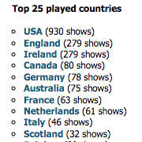
Top 10 most played songs
Before we look at the top 10, let’s see how many different songs U2 has played live.
# number of unique songs played
nrow(unique(u2data[,c('song_title')]))[1] 994This does not match the info at https://www.u2gigs.com/all-songnames.html as there it is stated:
We have 1011 different songs in our database.
However, at at a different page (https://www.u2gigs.com/most-played-songs.html) it is stated:
We found 994 different songs in our database.
And that number coincides with the number found in my data.
The top 10 of songs that U2 played most often can be seen below. This does not match completely with the statistics listed at https://www.u2gigs.com/most-played-songs.html. There are several songs that have a count that is 1 higher in my data (Pride, Streets, One, Bullet, Still Haven’t Found).
# songs most played
top_played_songs <- find_most_played_songs(u2data, n = 15)
print(top_played_songs)# A tibble: 15 × 4
song_title times_played_total times_played_regular times_played_snippet
<chr> <int> <int> <int>
1 Sunday Bloody S… 1082 935 147
2 Pride (In the N… 1057 1057 0
3 I Will Follow 1053 1053 0
4 Where the Stree… 977 975 2
5 With or Without… 913 910 3
6 One 865 852 13
7 New Year's Day 805 804 1
8 Bullet the Blue… 793 793 0
9 I Still Haven't… 697 691 6
10 Beautiful Day 674 673 1
11 Until the End o… 648 648 0
12 Mysterious Ways 639 639 0
13 Vertigo 603 586 17
14 Bad 568 561 7
15 Elevation 560 558 2The info at https://www.u2gigs.com/tourdb-stats.html:
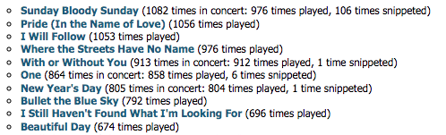
I took a closer look at the song Pride to see where the difference of 1 time played is between my data and the data at https://www.u2gigs.com/Pride_(In_the_Name_of_Love)-s40.html. I copied all the times the song was played from that page and pasted in Excel. With the code below I obtained the list from my data and compared that side by side in Excel.
# Pride - number of times played
pride_data <- subset(u2data, song_title == 'Pride (In the Name of Love)', select = c("date","city","tour", "song_title", "showID"))
#write.csv(pride_data, "pride_data.csv")I discovered that the issue in my data is at the ZOO TV show on March 31, 1992 in Rosemont: https://www.u2gigs.com/show235.html. Pride was played one time at that show but appears in my data as it was played 2 times during that show:
# Rosemont show 1992 set list
rosemont_data <- subset(u2data, showID == 235, select = c("date", "city", "song_position","song_title","snippet", "encore"))
print(rosemont_data)# A tibble: 46 × 6
date city song_position song_title snippet encore
<date> <chr> <dbl> <chr> <lgl> <lgl>
1 1992-03-31 Rosemont 1 Zoo Station FALSE FALSE
2 1992-03-31 Rosemont 2 The Fly FALSE FALSE
3 1992-03-31 Rosemont 3 Even Better Than The Real T… FALSE FALSE
4 1992-03-31 Rosemont 4 Mysterious Ways FALSE FALSE
5 1992-03-31 Rosemont 4 Love To Love You Baby TRUE FALSE
6 1992-03-31 Rosemont 5 One FALSE FALSE
7 1992-03-31 Rosemont 6 Until the End of the World FALSE FALSE
8 1992-03-31 Rosemont 7 Who's Gonna Ride Your Wild … FALSE FALSE
9 1992-03-31 Rosemont 8 Tryin' to Throw Your Arms A… FALSE FALSE
10 1992-03-31 Rosemont 8 Love And Affection TRUE FALSE
# ℹ 36 more rowsWith this we can see that there is duplicated data for this show in my data. I went back to my original scraped files and indeed I saw that the duplication happened where the scraping process had been interrupted and later restarted manually. Let’s check to what extent there are duplicated rows in my data:
# show duplicate rows
duplicated_rows <- u2data[duplicated(u2data), ]
print(duplicated_rows, n=max())# A tibble: 24 × 15
showID tour leg date venue city state country song_position snippet
<dbl> <chr> <chr> <date> <chr> <chr> <chr> <chr> <dbl> <lgl>
1 235 U2 Z… ZOO … 1992-03-31 Rose… Rose… Illi… USA 1 FALSE
2 235 U2 Z… ZOO … 1992-03-31 Rose… Rose… Illi… USA 2 FALSE
3 235 U2 Z… ZOO … 1992-03-31 Rose… Rose… Illi… USA 3 FALSE
4 235 U2 Z… ZOO … 1992-03-31 Rose… Rose… Illi… USA 4 FALSE
5 235 U2 Z… ZOO … 1992-03-31 Rose… Rose… Illi… USA 4 TRUE
6 235 U2 Z… ZOO … 1992-03-31 Rose… Rose… Illi… USA 5 FALSE
7 235 U2 Z… ZOO … 1992-03-31 Rose… Rose… Illi… USA 6 FALSE
8 235 U2 Z… ZOO … 1992-03-31 Rose… Rose… Illi… USA 7 FALSE
9 235 U2 Z… ZOO … 1992-03-31 Rose… Rose… Illi… USA 8 FALSE
10 235 U2 Z… ZOO … 1992-03-31 Rose… Rose… Illi… USA 8 TRUE
# ℹ 14 more rows
# ℹ 5 more variables: encore <lgl>, song_title <chr>, show_url <chr>,
# song_url <chr>, song_lyrics <chr>Here we see the Rosemont show (show ID 235) again. I manually checked the others:
- El Pueblo Vencerá at show with showID 1056, and also at show with showID 1060
- this turned out to be correct as the snippet was played two times in the same regular song (Mothers of the Disappeared), so it looks like a duplicate row but is correct.
- Two Shots of Happy, One Shot of Sad at show with showID 1133
- this also turned out to be correct as the snippet was played two times in the same regular song (Stay), so it looks like a duplicate row but is correct.
This means I only have to remove the Rosemont show duplicate rows, as follows:
# retrieve row indices of all duplicated rows
which(duplicated(u2data) | duplicated(u2data, fromLast = TRUE)) [1] 2959 2960 2961 2962 2963 2964 2965 2966 2967 2968 2969 2970
[13] 2971 2972 2973 2974 2975 2976 2977 2978 2979 2980 2981 2982
[25] 2983 2984 2985 2986 2987 2988 2989 2990 2991 2992 2993 2994
[37] 2995 2996 2997 2998 2999 3000 18166 18168 18239 18241 20327 20329# the first 21 are the ones that should be deleted
# check rows 20, 21 and 22 with indices 2959, 2979 and 2980, respectively
u2data[2959,]# A tibble: 1 × 15
showID tour leg date venue city state country song_position snippet
<dbl> <chr> <chr> <date> <chr> <chr> <chr> <chr> <dbl> <lgl>
1 235 U2 ZO… ZOO … 1992-03-31 Rose… Rose… Illi… USA 1 FALSE
# ℹ 5 more variables: encore <lgl>, song_title <chr>, show_url <chr>,
# song_url <chr>, song_lyrics <chr>u2data[2979,]# A tibble: 1 × 15
showID tour leg date venue city state country song_position snippet
<dbl> <chr> <chr> <date> <chr> <chr> <chr> <chr> <dbl> <lgl>
1 235 U2 ZO… ZOO … 1992-03-31 Rose… Rose… Illi… USA 17 FALSE
# ℹ 5 more variables: encore <lgl>, song_title <chr>, show_url <chr>,
# song_url <chr>, song_lyrics <chr>u2data[2980,]# A tibble: 1 × 15
showID tour leg date venue city state country song_position snippet
<dbl> <chr> <chr> <date> <chr> <chr> <chr> <chr> <dbl> <lgl>
1 235 U2 ZO… ZOO … 1992-03-31 Rose… Rose… Illi… USA 1 FALSE
# ℹ 5 more variables: encore <lgl>, song_title <chr>, show_url <chr>,
# song_url <chr>, song_lyrics <chr># correct, these two rows correspond to the first one to delete (Zoo Station), the last one to delete (Desire) and the first one to keep (Zoo Station), respectively
# thus, we need to remove the rows with indices:
# 2959 2960 2961 2962 2963 2964 2965 2966 2967 2968 2969 2970 2971 2972 2973 2974 2975
# 2976 2977 2978 2979
# check number of rows before deletion
nrow(u2data)[1] 39674# result: 39674
# delete duplicated rows from Rosemont show
u2data <- u2data[-(2959:2979),]
# check number of rows after deletion
nrow(u2data)[1] 39653#result: 39653
# difference: 39674 - 39653
print(39674 - 39653)[1] 21# result: 21
#correct
# now save corrected data to csv file
# commented out because this has already been done
#write.csv(u2data, file = "u2data/u2data_all_shows_clean_final.csv", row.names = FALSE)Now that those duplicated rows were removed, let’s look at the songs by number of times played again and compare again to the info at https://www.u2gigs.com/most-played-songs.html.
# read the u2 concertData
u2data <- read_concertData_csv('u2data/u2data_all_shows_clean_final.csv')
# songs most played
top_played_songs <- find_most_played_songs(u2data, n = 15)
print(top_played_songs)# A tibble: 15 × 4
song_title times_played_total times_played_regular times_played_snippet
<chr> <int> <int> <int>
1 Sunday Bloody S… 1082 935 147
2 Pride (In the N… 1056 1056 0
3 I Will Follow 1053 1053 0
4 Where the Stree… 976 974 2
5 With or Without… 913 910 3
6 One 864 851 13
7 New Year's Day 805 804 1
8 Bullet the Blue… 792 792 0
9 I Still Haven't… 696 690 6
10 Beautiful Day 674 673 1
11 Until the End o… 647 647 0
12 Mysterious Ways 638 638 0
13 Vertigo 603 586 17
14 Bad 567 560 7
15 Elevation 560 558 2Yes, total times the songs were played match now. There is still discrepancies in the times it was played as regular song or snippet.
Let’s check Where The Streets Have No Name. In the u2gigs.com it has a total play count of 976, all regular performances, no snippets. In my data it states 974 regular performances and 2 times as a snippet.
WTSHNN_regular_play_count <- subset(u2data, song_title == 'Where the Streets Have No Name' & snippet == FALSE, select = c("showID", "date", "city", "song_position","song_title","snippet", "encore"))
print(WTSHNN_regular_play_count)# A tibble: 974 × 7
showID date city song_position song_title snippet encore
<dbl> <date> <chr> <dbl> <chr> <lgl> <lgl>
1 8 1990-01-05 Rotterdam 5 Where the Stre… FALSE FALSE
2 9 1990-01-06 Rotterdam 1 Where the Stre… FALSE FALSE
3 11 1990-01-09 Rotterdam 1 Where the Stre… FALSE FALSE
4 12 1990-01-10 Rotterdam 6 Where the Stre… FALSE FALSE
5 29 1998-01-27 Rio de Janeiro 16 Where the Stre… FALSE FALSE
6 37 1998-01-30 Sao Paulo 15 Where the Stre… FALSE FALSE
7 42 1998-01-31 Sao Paulo 15 Where the Stre… FALSE FALSE
8 55 1998-02-05 Buenos Aires 15 Where the Stre… FALSE FALSE
9 58 1998-02-06 Buenos Aires 15 Where the Stre… FALSE FALSE
10 59 1998-02-07 Buenos Aires 16 Where the Stre… FALSE FALSE
# ℹ 964 more rowsWTSHNN_snippet_play_count <- subset(u2data, song_title == 'Where the Streets Have No Name' & snippet == TRUE, select = c("showID", "date", "city", "song_position","song_title","snippet", "encore"))
print(WTSHNN_snippet_play_count)# A tibble: 2 × 7
showID date city song_position song_title snippet encore
<dbl> <date> <chr> <dbl> <chr> <lgl> <lgl>
1 1887 2014-12-01 New York 4 Where the Streets Hav… TRUE TRUE
2 2108 2017-12-04 New York 4 Where the Streets Hav… TRUE FALSE In the two shows where my scraping code had counted WTSHNN as a snippet, we see the format difference:
<li><a href='/Where_the_Streets_Have_No_Name-s17.html'>Where the Streets Have No Name</a> <span class='guestartist'>(with Bruce Springsteen)</span></li>
<li><a href='/Where_the_Streets_Have_No_Name-s17.html'>Where the Streets Have No Name</a> <em class='snippet'>partial chords</em></li>Compared to a more normal coding for regular songs on the u2gigs.com site:
<li><a href='/Where_the_Streets_Have_No_Name-s17.html'>Where the Streets Have No Name</a></li>Thus, my scraping code had not identified these two performances of WTSHNN as regular but incorrectly as snippets. As my project was ending I did not follow up to correct my u2data set with these relativelz few errors in the snippet flag.
Top 10 opening songs
Which were the songs U2 played most to open the shows? This can be seen at https://www.u2gigs.com/tourdb-stats.html.
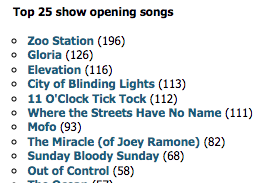
In my data the numbers are like shown below:
# Get top 10 opening songs
top_10_openers <- find_most_played_opening_songs(u2data, n = 10)
print(top_10_openers)# A tibble: 10 × 2
song_title times_played
<chr> <int>
1 Zoo Station 197
2 Gloria 130
3 Elevation 118
4 11 O'Clock Tick Tock 117
5 City of Blinding Lights 116
6 Where the Streets Have No Name 114
7 Mofo 94
8 The Miracle (of Joey Ramone) 85
9 Out of Control 72
10 Sunday Bloody Sunday 71The numbers did not match the information at https://www.u2gigs.com/tourdb-stats.html. I checked a few songs and observed a few things:
First, the opening songs counts listed at https://www.u2gigs.com/tourdb-stats.html seem to be outdated. When you click on one the songs in that list it shows a different number on the song page. For example, Zoo Station has the opening song count of 196 at https://www.u2gigs.com/tourdb-stats.html (see earlier screen shot), but 197 at https://www.u2gigs.com/openingsong141.html:
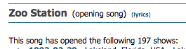
Thus, it looks like u2gigs.com needs to refresh the ‘Top 25 show opening songs’ list at https://www.u2gigs.com/tourdb-stats.html.
Second, I observed a few rare cases on the u2gigs.com show pages which were not handled properly by my scraping code, or were not handled properly by u2gigs.com, for example:
Example 1:
Oct 23rd, 2000 set list, https://www.u2gigs.com/show1147.html: 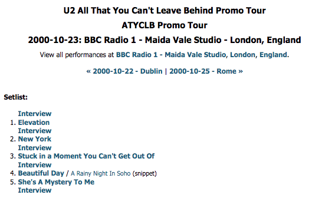
My code and data did count Elevation as opening song for this ‘show’ while u2gigs.com did not count it, probably because it was preceded by an interview.
The same issue occurred with this show: https://www.u2gigs.com/show1149.html, and potentially with other shows as I only checked shows that opened with Elevation. u2gigs.com may want to check how they count opening songs in such case.
Example 2
2001-09-06 set list, https://www.u2gigs.com/show1473.html. In this case the set list started with a medley, with two songs as one entry. This is different than a regular song plus a snippet. My scraping code could apparently not handle this.
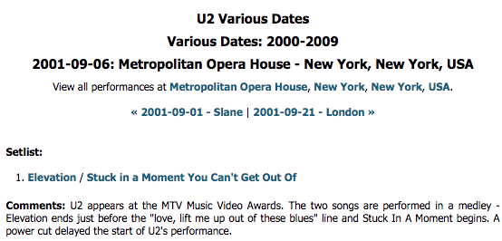
I decided not to invest more time in trying to detect and fix these rare issues.